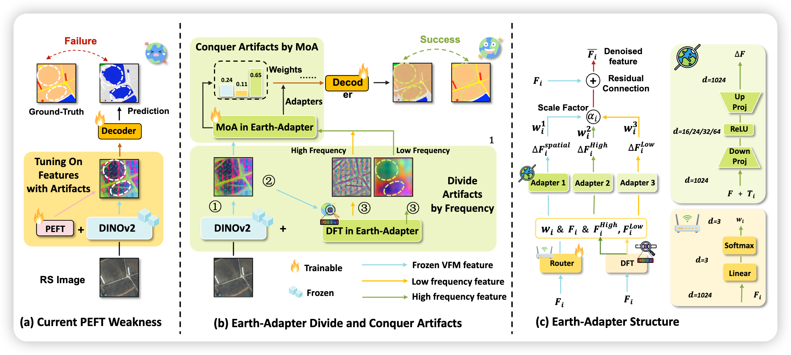

Breaking Bad Molecules: Are MLLMs Ready for Structure-Level Molecular Detoxification?
Fei Lin, Ziyang Gong, Cong Wang, Tengchao Zhang, Yonglin Tian, Yining Jiang, Ji Dai, Chao Guo, Xiaotong Yu, Xue Yang, Gen Luo, Fei-Yue Wang